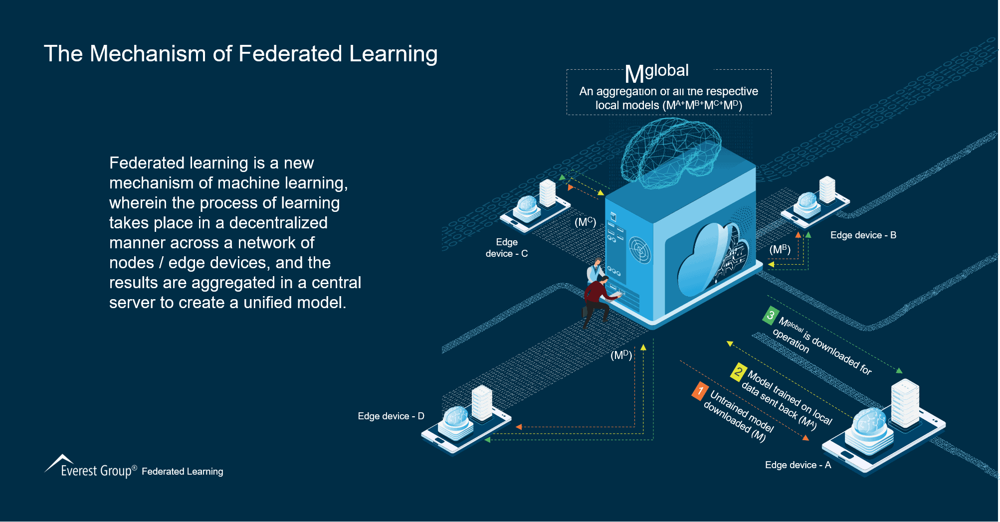

Latest Articles
From The Blog
Create your Blog
A Scalable Approach for Partially Local Federated Learning
Thursday, December 16, 2021
Previous approaches for partially local federated learning used stateful algorithms, which require user devices to store a state across rounds of federated training. Specifically, these approaches required devices to store local parameters across rounds. However, these algorithms tend to degrade in large-scale federated learning settings. ... In these cases, the majority of users do not participate in training, and users who do participate likely only do so once, resulting in a state that is rarely available and can get stale across rounds. Also, all users who do not participate are left without trained local parameters, preventing practical applications. Federated Reconstruction is stateless and avoids the need for user devices to store local parameters by reconstructing them whenever needed. When a user participates in training, before updating any globally aggregated model parameters, they randomly initialize and train their local parameters using gradient descent on local data with global parameters frozen. They can then calculate updates to global parameters with local parameters frozen. A round of Federated Reconstruction training is depicted below.
Evolution and the Winds of Change
Saturday, December 20, 2021
In Florida, a major operations center belonging to Spirit Airlines left Ft. Lauderdale for more inland facilities near Orlando, citing an increase in both hurricane strength and flooding damage. Hewlett Packard is moving its corporate headquarters away from Houston, on the coast of the Gulf of Mexico, after flooding due to storm surges damaged facilities there during one of the worst hurricane seasons in decades.... In these cases, the majority of users do not participate in training, and users who do participate likely only do so once, resulting in a state that is rarely available and can get stale across rounds. Also, all users who do not participate are left without trained local parameters, preventing practical applications. Federated Reconstruction is stateless and avoids the need for user devices to store local parameters by reconstructing them whenever needed. When a user participates in training, before updating any globally aggregated model parameters, they randomly initialize and train their local parameters using gradient descent on local data with global parameters frozen. They can then calculate updates to global parameters with local parameters frozen. A round of Federated Reconstruction training is depicted below.
My Idea.
My Website.
Get Online with BlogSpot!
✔ Perfect for small blogs
✔ No Payment required
✔ Full support online.

THE TOP 6 INSIGHTS
- Latest Articles
- Business Ideas
- Fresh Content
- Gallery
- IOT
- Machine Learning